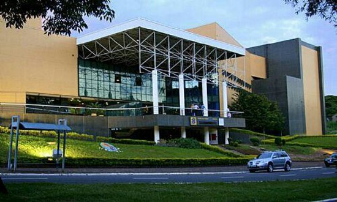

| Home |

Foto Teatro Calil Haddad
Com 10 anos de existência, o Calil Haddad é o maior
teatro do Norte do Paraná, com área construída de 7.836,95 m².
Possui completa infra-estrutura que o credencia como um dos
melhores do país. Possui instalações climatizadas com sistema
central. Tem amplo estacionamento para veículos e três bilheterias.
Com a reunião de todos esses setores, o teatro conserva a
história de Maringá e oferece momentos culturais ao público.
Abriga o Museu de História e Arte Hélenton Borba Cortes, a Sala
de Exposições, a Divisão de Patrimônio Histórico e Cultural e a
Secretaria da Cultura. Conta com o Foyer Elfrida Wunderlich Biscaia,
que tem dois acessos, interligando o teatro e o museu. Abriga em
um dos espaços um painel em mosaico do artista Poty,
possui palco alternativo de 49,95 m² e banheiros.
Ainda apresenta em outro espaço o Auditório Oscar Leandro,
que possui seis entradas, duas saídas de emergência, capacidade
para 797 pessoas e é composto por platéia e palco. A platéia
comporta 582 lugares e o balcão oferece espaço para 215 lugares.
O palco apresenta formato italiano, com área de 112 m², boca de
cena de 12 metros de largura e 6,60 metros de altura,
procênio com 4,50 metros e profundidade de 12 metros.
O Museu de História e Arte Helenton Borba Cortes abriga um
grande acervo de obras que relatam aspectos da história e da
cultura de Maringá. O acervo é composto por objetos como
fotografias, maquinários e arados agrícolas, a maioria deles
da década de 40, cedidos por pioneiros. Uma das peças históricas
que faz parte do acervo do museu é o piano que pertenceu ao
compositor Joubert de Carvalho, autor da música Maria do Ingá,
que deu origem ao nome da cidade.
Além do Museu de História e Arte Helenton Borba Cortes, o Teatro
Calil Haddad também abriga a Divisão de Patrimônio Histórico e
Cultural, criada em 1984, com o intuito de resgatar documentos
históricos sobre a trajetória da cidade. O setor de Patrimônio
Histórico é procurado com freqüência por educadores, acadêmicos,
historiadores e pessoas atuantes nas mais diversas áreas,
interessadas em pesquisar e conhecer mais detalhes da história do município.
O acervo do patrimônio é composto por 3 mil peças organizadas
por seções. Uma delas dispõe de documentos escritos separados
em recortes de jornais, coleção de teses, livros, arquivos de
periódicos e acervos particulares em geral. Outra dispõe de documentos
orais compostos por cadastro de pioneiros, entrevistas e discos
arquivados em fitas (cassete) e vídeo (VHS). O patrimônio também
conta com um acervo iconográfico, constituído por fotografias, slides, mapas e quadros.
A secretária da Cultura, Flor Duarte, ressalta a importância de
se ter um teatro como o Calil Haddad, que é uma casa de espetáculos
que vem proporcionando excelentes momentos artísticos para Maringá.
“Agradeço ao prefeito pelo apoio incondicional que a administração
tem dado aos projetos da Secretaria da Cultura, aos artistas que
estiveram neste palco proporcionando bons momentos para o público
e aos funcionários que são os verdadeiros guardiões deste teatro”.